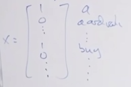
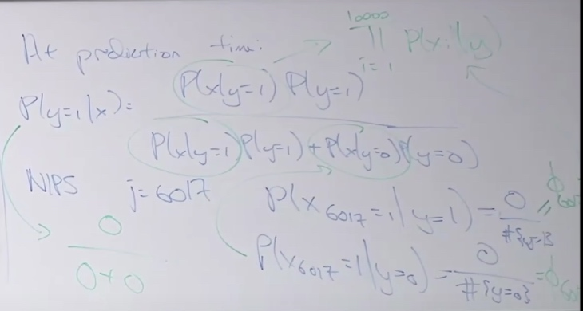
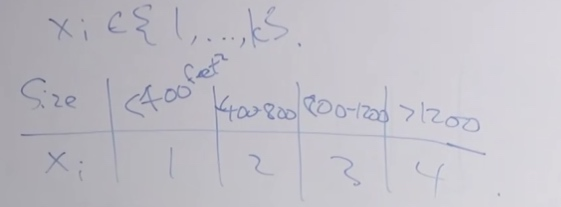
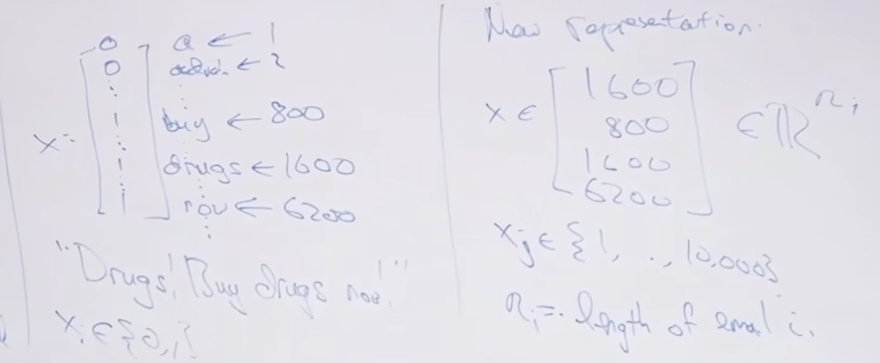
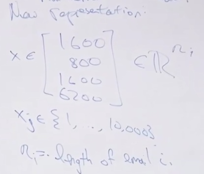
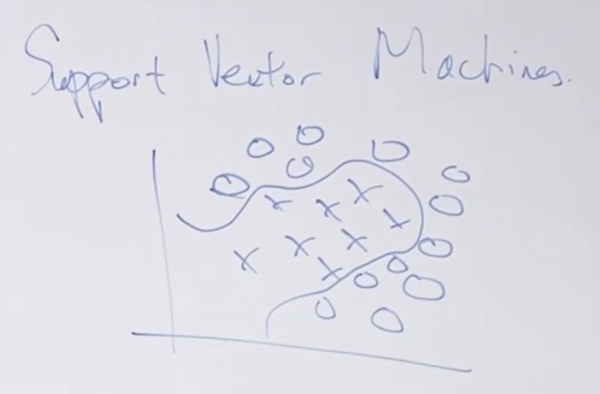
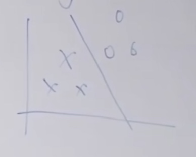
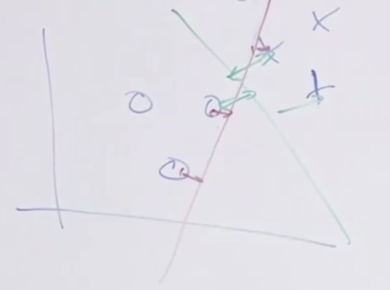
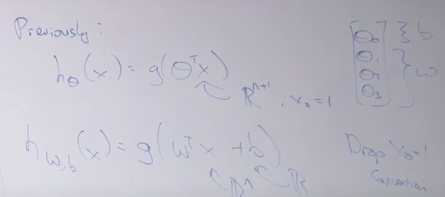
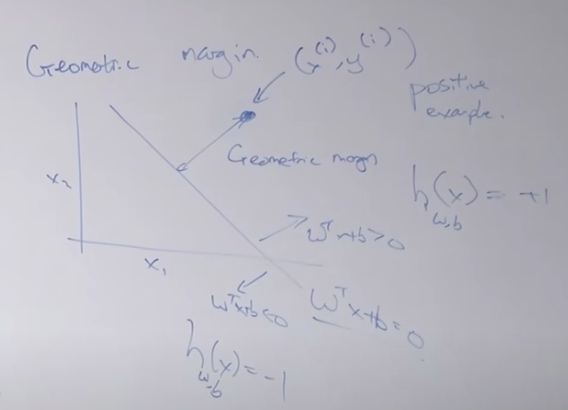

Naive Bayes

\(x_j = 1\{\text{word k appears in email}\}\)
Now build a generative model for this,
Gaussian model for p(x|y) and Bernoulli for p(y).
\[ \begin{aligned}
p(x|y) =\prod ^d_{j=1}p(x_j|y)
\end{aligned}
\]
So the parameters for Naive Bayes model are,
- \(\phi_y = P(y=1)\) is the class prior, what is the chance that y is equal to 1.
- \(P(x_j=1|y=0) = \phi_{j|y=0}\)
- \(P(x_j=1|y=1) = \phi_{j|y=1}\)
\[\begin{aligned}
\phi &=\frac{1}{n} \sum_{i=1}^{n} 1\left\{y^{(i)}=1\right\} \\
\mu_{0} &=\frac{\sum_{i= 1}^{n} 1\left\{y^{(i)}=0\right\} x^{(i)}}{\sum_{i=1}^{n} 1\left\{y^{(i)}=0\right\}} \\
\mu_{1} &=\frac{\sum_{i=1}^{n} 1\left\{y^{(i)}=1\right\} x^{(i)}}{\sum_{i=1}^{n} 1\left\{y^{(i)}=1\right\}} \\
\Sigma &=\frac{1}{n} \sum_{i=1}^{n}\left(x^{(i)}-\mu_{y^{(i)}}\right)\left(x^{(i)}-\mu_{y^{(i)}}\right)^{T} .
\end{aligned}
\]
\[\begin{aligned}
\phi_{j \mid y=1} &=\frac{\sum_{i=1}^{n} 1\left\{x_{j}^{(i)}=1 \wedge y^{(i)}=1\right\}}{\sum_{i=1}^{n} 1\left\{y^{(i)}=1\right\}} \\
\phi_{j \mid y=0} &=\frac{\sum_{i=1}^{n} 1\left\{x_{j}^{(i)}=1 \wedge y^{(i)}=0\right\}}{\sum_{i=1}^{n} 1\left\{y^{(i)}=0\right\}} \\
\phi_{y} &=\frac{\sum_{i=1}^{n} 1\left\{y^{(i)}=1\right\}}{n}
\end{aligned}
\]
Than in prediction time, we use Bayes rule:
\[P(y=1|x) = \frac {P(x|y=1)\cdot P(y=1)}{P(x)}
\]
Where
\[P(x) = P(x|y=1)P(y=1) +P(x|y=0)P(y=0)
\]
This algorithm will almost work, but here is where it breaks down.
Contradiction:
NIPS, whose position is j = 6017.
\(P(x_{6017} = 1|y=1) = \frac{0}{\#\{y=1\}}\)
\(P(x_{6017} = 1|y=0) = \frac{0}{\#\{y=0\}}\)
Here we see the probability is zero. However, we cannot say the probability is zero just because we haven't seen it.

So Laplace Smoothing is used to describe to address this 0 divided by 0 problem.
Laplace Smoothing
The game Standard football team played and we are going to predict the game on 12/31.
So the win or not is our x.
So \(P(x=1) = \frac{\#'1's}{\#'1's + \#'0's} = \frac{0}{0+4} = 0\)
This is kind of mean, we cannot say they cannot win the last game just because they lost the first 4 games.
So what Laplace Smoothing did is add 1 on the number of 1s and the number of 0s
So \(P(x=1) = \frac{\#'1's}{\#'1's + \#'0's} = \frac{1}{1+5} = 1/6 \)
More generally, for \(x\in\{1,...k\}\)
We estimate
\[P(x=j)=\frac{\sum_{j=1}^{M} 1\left\{x^{(i)}=j\right\}+1}{M + k}
\]
\[\begin{aligned}
\phi_{j \mid y=0} &=\frac{\sum_{i=1}^{n} 1\left\{x_{j}^{(i)}=1 , y^{(i)}=0\right\}+1}{\sum_{i=1}^{n} 1\left\{y^{(i)}=0\right\}+2}
\end{aligned}
\]

Now we can discretize a continuous valued feature to a discrete value feature.
\(P(x|y) = \prod^m_{j=1}P(x_j|y)\) This is a multinomial probability.
In practice, we often divide the value into 10 buckets, it works well enough.
Multivirate Bernoulli Event Model and Multinomial Event Model
Multivirate Bernoulli Event Model
“Drugs! Buy drugs now!”

Multinomial Event Model

With the Multinomial Event Model, we have \(P(x,y) = P(x|y)P(y)\)
\[\begin{aligned}
P(x,y) &= P(x|y)P(y) \\
&= \prod^n_{j=1}P(x_j|y) P(y)
\end{aligned}
\]
Event Models
Comments on apply ML
SVM intros
Sometimes we want to find non-linear boundary.

We just map the \(x_1, x_2\) to high dimension vector \(\phi(x) = [x_1,x_2,x_1^2,x_2^2,x_1x_2,...]\). If we send this vector to logistic regression, logistic regression can learn non-linear decision boundaries.
Randomly choosing these features is a little bit of pain.
SVM now has very robust tool package for us, we can just run and chooese.
SVM does not need so many parameters.
- Optimal margin classifier(separable case)

- Kernels
- When we map x to \(\phi(x)\) from \(\mathbb{R}^2\rightarrow\mathbb{R}^{10000}\). Kernels will help us with such mapping.
- Ineperable case.
Optimal Margin Classifier
Functional Margin
The functional margin of the classifier is how confidently and accurately do you classify an example.
\[h_\theta(x) = g(\theta^Tx)
\]
We get "1" if \(\theta^Tx > 0\)(\(h_\theta(x) = g(\theta^Tx) > 0.5\) ), get "0" if \(\theta^Tx < 0\).
If \(y^{(i)} = 1\), hope that \(\theta^Tx^{(i)} >> 0\);
If \(y^{(i)} = 0\), hope that \(\theta^Tx^{(i)} << 0\)
Geometric Margin

The green line looks much better than the red line.
We call the gree line the geometric margin.
Notation
- Labels: \(y\in\{-1,+1\}\). We will have h output values in \(\{-1,+1\}\)
\[g(z)=\left\{\begin{aligned}
1 & \text { if } z \geqslant 0 \\
-1 & \text { otherise }
\end{aligned}\right.
\]
- The parameters of SVM will be w and b.
\[h_{w,b}(x) = g(w^Tx + b)
\]
\(x\in\mathbb{R}^n, b \in \mathbb{R}\)

\(W^TX = \sum^n_{i=1} w_ix_i + b\) Since we get rid of \(x_0\)
Functional Margin
Single Training Example
functional margin of hyperplane(just a staight line, a linear classifier) defined by (w,b) with respect to \((x^{(i)},y^{(i)})\):
\[\hat\gamma^{(i)} = y^{(i)}(w^Tx^{(i)} + b)
\]
- If \(y^{(i)} = 1\), want \(w^Tx^{(i)} + b >> 0\)
- If \(y^{(i)} = -1\), want \(w^Tx^{(i)} + b << 0\)
- So we want \(\hat\gamma^{(i)}>>0\)
- If \(\hat\gamma^{(i)}>0\), that means \(h(x^{(i)}) = y^{(i)}\). That at least prove this logistic example is correct. At least the prediction is above 0.5.
The whole training sets(how well are you doing on the worst example in your traning set)
Functional margin wrt training set:
\[\hat\gamma = \min_i \hat\gamma^{(i)}
\]
we assume the training set is linearly separable
One thing the functional margin has is it can be treated by just scaling the parameters.
In \(\hat\gamma^{(i)} = y^{(i)}(w^Tx^{(i)} + b)\), we can just simply scale w and b to get the functional margin scale same times. But it doesn't change any decision boundary. Doesn't do any better in classification.
So we can do
\[\begin{aligned}
&\|\omega\| =1 \\
&(\omega, b) \rightarrow\left(\frac{\omega}{\| \omega||} \frac{b}{\lfloor\omega \|}\right)
\end{aligned}
\]
to prevent such cheating.
Geometric Margin
To find the functional margin, let's define the geometric margin.

Geometric margin is defined as the Euclidean distance from the point we classifying to the line.
Geometric margin of hyperplane (w,b) with respect to \((x^{(i)}, y^{(i )})\)
\[y^{(i)}=\frac{\omega^{\top} x^{(i)}+b}{\|\omega\|}
\]
The relation between geometric(\(\gamma^{(i)}\)) & functional margin(\(\gamma^{(i)}/||w||\))
\[\gamma = \min_i \gamma^{(i)}
\]
Optimal Margin Classifier
Choose w,b to maximize the \gamma
The optimal margin classifier is the baby SVM.
We want to have
\[\max_{\gamma,w,b} \gamma
\]
\[s.t. \frac{y^{(i)}\left(\omega^{\top} x^{(1)}+b\right)}{\|\omega\|} \geq \gamma \quad i=1, \ldots, m
\]
We want to set Gamma as big as possible, which means we are maximizing the worst-case geometric margin.
Such problem is a convex optimization problem, it is difficult to solve it without gradient descent and initially known local optima and so on.
After several steps, we can rewrite the formula to the following:
\[\min_{w,b} ||w||^2
\]
\[s.t. y^{(i)}(w^Tx^{(i)} + b) \geq 1
\]
s.t.: subject to